| Previous | Table of Contents | Next |
People would rather live with a problem they cannot solve than accept a solution they cannot understand.
—Woolsey and Swanson (1975)
The queueing network modeling techniques presented so far are sufficient to solve a large number of performance problems. One technique that is useful in modeling large systems but has not been covered is hierarchical decomposition. This technique, which is the main topic of this chapter, allows a large queueing network to be decomposed in smaller networks. Since the technique involves using load-dependent servers, an extension of MVA to handle such servers is presented first in Section 36.1. Hierarchical decomposition is explained in Section 36.2. Finally, Section 36.3 discusses current limitations of queueing theory as applied to computer systems modeling.
A load-dependent service center is one whose service rate varies with the load, that is, the number of jobs in the center. For example, a disk subsystem with m disk drives sharing a single queue of requests may be represented by an m-server center whose service rate µ(n) varies with the number of requests n as follows:
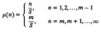
Here, S is the service time per request when there is only one request in the subsystem. This is similar to the M/M/m queue discussed earlier in Section 31.3 except that the arrivals may not be Poisson.
Mean-value analysis, as described earlier in Section 34.2, is applicable only for networks with fixed-capacity service centers and delay centers. (Strictly speaking, delay centers are also load dependent since their service rate is proportional to the number of jobs.) The analysis actually applies to a more general class of service centers and jobs. In particular, it can easily be extended to load-dependent service centers. Recall that MVA consists of three equations corresponding to computing the response time, throughput, and queue length. The throughput equation for a system with load-dependent service centers is identical to that presented earlier in Equation (34.4). The response time and queue length equations are different and are presented here.
For load-dependent service centers, the queue length distribution (rather than the mean queue length) is important since the service rate is a function of the queue length. Let pi(j | n) denote the probability of finding j jobs at the ith device when there are n jobs in the system. Let µi(j) be the service rate of the ith device when there are j jobs at the device. The response time at the device for a job arriving when there are already j – 1 jobs in the system (total j jobs including the one just arriving) is j / µi(j). The mean response time per visit is therefore given by
The probability pi(j | n) of j jobs at the ith service center when there are n jobs in the system is computed as follows:

The mean queue length Qi(n) at the ith device when there are n jobs in the system is given by
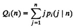
It is easy to see that the preceding equations reduce to those for fixed-capacity service centers if we substitute µi(n) = 1/Si, where Si is the service time per visit.
The complete MVA algorithm including fixed-capacity service centers, delay centers, and load-dependent service centers is summarized in Box 36.1.
Example 36.1 Consider the simple network of two service centers shown in Figure 36.1. The first service center, labeled “Disk B”, is a fixed-capacity
Box 36.1 MVA Including Load-dependent Centers
- Inputs:
- Z = think time
- Si = service time per visit to the ith device
- Vi = number of visits to the ith device
- M = number of devices (not including terminals)
- N = number of users
- µi(j) = service rate of the ith center when there are j jobs in it
- Outputs:
- X = system throughput
- Qi = average number of jobs at the ith device
- Ri = response time of the ith device
- R = system response time
- Ui = utilization of the ith device
- Pi(j) = probability of j jobs at the ith center
- Initialization:
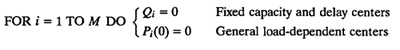
- Iterations:
- FOR n = 1 TO N DO
- BEGIN
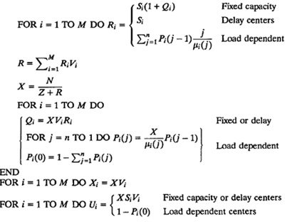
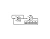
FIGURE 36.1 Queueing network model with a load-dependent server.service center. The mean service time per visit for this center is 0.26 second and each job makes six visits to this center. The second center, labeled “FEC” (or Flow-Equivalent Center) is a load-dependent service center. It is visited once by each job. Its service rate µ(n), as a function of number of jobs n in the service center, is given by
µ(1) = 0.32 job/second
µ(2) = 0.39 job/second
µ(3) = 0.42 job/second
To analyze this network using MVA for load-dependent service centers, we proceed as follows:
Initialization:
QB(0) = 0, P(0 | 0) = 1
Iteration 1
Device response times:
RB(1) = SB[1 + QB(0)] = 0.26
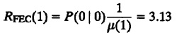
System response time:
R(1) = RB(1)VB + RFEC(1)VFEC = 0.26 × 6 + 3.13 4.68
System throughput:
X(1) = N/R(1) = 1/4.68 = 0.21
Queue lengths and probabilities:
QB(1) = X(1)RB(1)VFEC = 0.21 × 6 = 0.33
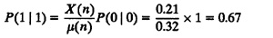
P(0 | 1) = 1 – P(1 | 1) = 1 – 0.67 = 0.33
Iteration 2
Device response times:
RB(2) = SB[1 + QB(1)] = 0.26(1 + 0.33) = 0.35
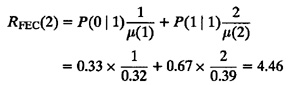
System response time:
R(2) = RB(2)VB + RFEC(2)VFEC = 0.35 × 6 + 4.46 = 6.54
System throughput:
X(2) = N / R(2) = 2/6.54 = 0.31
Queue lengths and probabilities:
QB(2) = X(2)RB(2)VB = 0.31 × 0.35 × 6 = 0.64
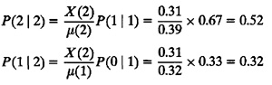
P(0 | 2) = 1 – P(1 | 2) = 1 – 0.52 – 0.32 = 0.16
Iteration 3
Device response times:
RB(3) = SB(1 + QB(2)) = 0.26(1 + 0.64) = 0.43
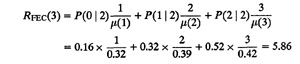
System response time:
R(3) = RB(3)VB + RFEC(3)VFEC = 0.43 × 6 + 5.86 = 8.42
System throughput:
X(3) = N / R(3) = 3/8.42 = 0.36
Queue lengths and probabilities:
QB(3) = X(3)RB(3)VB = 0.36 × 0.43 × 6 = 0.91
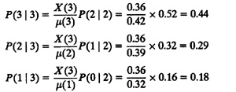
P(0 | 3) = 1 – P(1 | 3) – P(2 | 3) – P(3 | 3) = 1 – 0.44 –0.29 – 0.18 = 0.09
The device throughputs with N = 3 are
XB = XVB = 0.36 × 6 = 2.16 jobs/second
XFEC = XVFEC = 0.36 × 1 = 0.36 job/second
The device utilizations with N = 3 are
UB = XSBVB = 0.36 × 0.26 × 6 = 0.562
UFEC = 1– P(0 | 3) = 1 – 0.09 = 0.91
Thus, we can say the following about this system:
- 1. The system throughput is 0.21, 0.31, and 0.36 job/second with one, two, and three jobs in the system, respectively.
- 2. The system response time is 4.68, 6.54, and 8.42 seconds for N = 1, 2, 3, respectively.
- 3. The mean queue length for disk B with N = 3 is 0.91.
- 4. The mean response time for disk B with N = 3 is 0.43 second.
- 5. The utilization of disk B with N = 3 is 0.562.
- 6. The probabilities of zero, one, two, and three jobs in the second device with N = 3 are 0.09, 0.18, 0.29, and 0.44, respectively.
We will make use of these results later in Example 36.2.
| Previous | Table of Contents | Next |
){kind=link}
){kind=link}